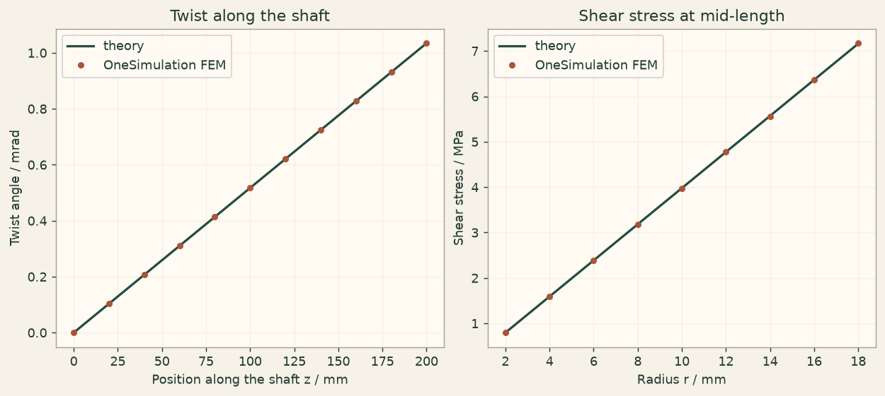

Docs › Examples › Torsion of a circular shaft
Solid mechanics · 3D
Torsion of a circular shaft
A clamped circular shaft under an end torque, graded against Saint-Venant torsion.

What it computes
OneSimulation solves the linear-elastic equilibrium on a curved cylinder mesh with a torque applied as a tangential end traction.
What it checks
The tip twist phi = T L/(G J) and the shear stress tau = T r/J match the closed form within about 0.3 %.
The notebook
The complete notebook, cell by cell. Run it to produce the figures and the comparison printout.
A solid circular shaft of radius \(R\) and length \(L\) is clamped at one end and twisted at the other by a torque \(T\). For a circular cross-section the warping vanishes, so Saint-Venant torsion theory is the exact elasticity solution.
The torque is applied as the exact tangential surface traction on the loaded end face,
where \(\mathbf r\) is the in-plane position measured from the axis. The lateral surface is traction free.
Reference. With the shear modulus \(G=E/\,[2(1+\nu)]\) the tip twist and the shear-stress distribution are
A rigid rotation by \(\varphi\) about the axis moves a point at radius \(r\) to a tangential displacement \(\varphi\,r\), which is how we read the twist back from the computed displacement field.
from importlib.metadata import version
import numpy as np
import matplotlib.pyplot as plt
import matplotlib
from cycler import cycler
from matplotlib.colors import LinearSegmentedColormap
# OneSimulation figure style: cream paper, dark-green ink, green-sand-copper field colours
CREAM, INK, GREEN, COPPER = "#F7F2E7", "#223D35", "#336B57", "#B66E43"
FIELD_CMAP = LinearSegmentedColormap.from_list(
"onesimulation", ["#214D43", "#5F9175", "#A8BC91", "#E4D6A0", "#CD9561", "#A85539"])
DIVERGING_CMAP = LinearSegmentedColormap.from_list(
"onesimulation_diverging", ["#104F54", "#5E9996", "#F7F2E7", "#D2996E", "#A4472D"])
for _cmap in (FIELD_CMAP, DIVERGING_CMAP):
if _cmap.name not in matplotlib.colormaps:
matplotlib.colormaps.register(_cmap)
plt.rcParams.update({
"figure.facecolor": CREAM, "savefig.facecolor": CREAM, "axes.facecolor": "#FFFAF2",
"text.color": INK, "axes.labelcolor": INK, "axes.titlecolor": INK, "axes.edgecolor": "#9FA593",
"xtick.color": INK, "ytick.color": INK, "grid.color": "#D5D7C8", "image.cmap": "onesimulation",
"axes.prop_cycle": cycler(color=[GREEN, COPPER, "#5F9175", "#A85539", "#214D43", "#CD9561", "#8B9A8D"]),
})
from onesim.cad.d3 import Cylinder
from onesim.materials import IsotropicSolid
from onesim.meshing import TetrahedralMesher
from onesim.numerics import Numerics
from onesim.numerics.fem import FiniteElement, Lagrange
from onesim.numerics.linear import SparseDirect
from onesim.physics.solid_mechanics import FixedDisplacement, LinearElasticity, Traction, TractionFree
from onesim.simulation import Problem, Simulation
print("OneSimulation:", version("onesimulation"))Parameters and reference values
R = 0.02 # m, shaft radius
length = 0.20 # m, shaft length (along z)
E, nu = 200e9, 0.30 # Pa, steel-like
torque = 100.0 # N·m applied at the free end
J = np.pi * R**4 / 2.0 # m^4, polar second moment of area
G = E / (2.0 * (1.0 + nu)) # Pa, shear modulus
twist_reference = torque * length / (G * J) # rad, tip rotation angle
print(f"J = {J:.3e} m^4, G = {G:.3e} Pa, reference tip twist = {twist_reference*1e3:.4f} mrad")Geometry, model and boundary conditions
The cylinder axis is the z axis; its origin sits at the centre of the bottom disk, which is the clamped face. The loaded face is the top disk.
geometry = Cylinder(radius=R, length=length)
material = IsotropicSolid(
density=7800.0, specific_heat_capacity=460.0, thermal_conductivity=50.0,
youngs_modulus=E, poisson_ratio=nu, thermal_expansion_coefficient=12e-6,
)
model = LinearElasticity(domain=geometry.volume, material=material)
def end_traction(x, y):
# Tangential traction t = (T/J) * (e_z x r) with r = (x, y, 0):
# e_z x r = (-y, x, 0). Returns one vector (tx, ty, tz) per point.
factor = torque / J
return factor * np.stack((-y, x, np.zeros_like(x)), axis=-1)
problem = Problem(
name="Circular shaft under end torque",
geometry=geometry,
physics=(model,),
boundary_conditions=(
# Clamped bottom face.
FixedDisplacement(boundary=geometry.boundaries.bottom, physics=model,
value=(0.0, 0.0, 0.0)),
# Torque as the exact tangential traction on the top face.
Traction(boundary=geometry.boundaries.top, physics=model, value=end_traction),
# Lateral surface carries no load.
TractionFree(boundary=geometry.boundaries.outer_wall, physics=model),
),
)
# Curved (quadratic) tetrahedra resolve the circular boundary; a few elements
# across the radius are enough for this smooth linear field.
mesh = TetrahedralMesher(target_size=R / 3.0, geometry_order=2).generate(geometry)
print("Mesh:", mesh.cell_count, "tetrahedra")
result = Simulation(
problem=problem,
mesh=mesh,
numerics=Numerics(spatial=FiniteElement(element=Lagrange(order=2)),
linear_solver=SparseDirect()),
).solve_stationary()Comparison with torsion theory
Tip twist. On the loaded end face we sample points at radius \(r_s\) on the \(+x\) axis, where the exact tangential displacement is \(u_y=\varphi\,r_s\).
displacement = result.field(model.displacement)
r_sample = 0.7 * R
tip = np.array([[r_sample, 0.0, length]])
u_y = float(displacement.evaluate(tip)[0, 1])
twist = u_y / r_sample
rel_twist = abs(twist - twist_reference) / abs(twist_reference)
print(f"Tip twist: FEM {twist*1e3:.4f} mrad, theory {twist_reference*1e3:.4f} mrad")
print(f"relative deviation (twist): {100*rel_twist:.2f} %")
# **Shear stress.** At mid-length, the shear stress magnitude should grow linearly
# with radius, tau(r) = T r / J. The stress components are ordered
# (xx, yy, zz, xy, yz, xz); the cross-section shear is (xz, yz).
stress = result.field(model.stress)
radii = np.array([0.3, 0.5, 0.7]) * R
probes = np.column_stack((radii, np.zeros_like(radii), np.full_like(radii, length / 2)))
s = np.asarray(stress.evaluate(probes))
tau_num = np.hypot(s[:, 5], s[:, 4]) # sqrt(sigma_xz^2 + sigma_yz^2)
tau_ref = torque * radii / J
rel_tau = float(np.max(np.abs(tau_num - tau_ref) / tau_ref))
print("Shear stress tau(r) at mid-length:")
for r, tn, tr in zip(radii, tau_num, tau_ref):
print(f" r={r*1e3:5.2f} mm FEM {tn/1e6:6.3f} MPa theory {tr/1e6:6.3f} MPa")
print(f"relative deviation (shear stress): {100*rel_tau:.2f} %")Figure
cream = "#fbf5eb"
fig, (ax0, ax1) = plt.subplots(1, 2, figsize=(9.5, 4.2), constrained_layout=True)
fig.patch.set_facecolor(cream)
for ax in (ax0, ax1):
ax.set_facecolor("#fffaf2")
ax.grid(alpha=0.25)
# Left: twist angle along the shaft (should grow linearly to the tip).
zs = np.linspace(0.0, length, 11)
axis_line = np.column_stack((np.full_like(zs, r_sample), np.zeros_like(zs), zs))
uy_line = np.asarray(displacement.evaluate(axis_line))[:, 1]
ax0.plot(zs * 1000, (torque * zs / (G * J)) * 1e3, color="#214D43", lw=1.8,
label="theory")
ax0.plot(zs * 1000, (uy_line / r_sample) * 1e3, "o", color="#A85539", ms=4,
label="OneSimulation FEM")
ax0.set(xlabel="Position along the shaft z / mm", ylabel="Twist angle / mrad",
title="Twist along the shaft")
ax0.legend()
# Right: shear stress against radius at mid-length.
rr = np.linspace(0.1 * R, 0.9 * R, 9)
pr = np.column_stack((rr, np.zeros_like(rr), np.full_like(rr, length / 2)))
sr = np.asarray(stress.evaluate(pr))
ax1.plot(rr * 1000, (torque * rr / J) / 1e6, color="#214D43", lw=1.8, label="theory")
ax1.plot(rr * 1000, np.hypot(sr[:, 5], sr[:, 4]) / 1e6, "o", color="#A85539", ms=4,
label="OneSimulation FEM")
ax1.set(xlabel="Radius r / mm", ylabel="Shear stress / MPa",
title="Shear stress at mid-length")
ax1.legend()
plt.show()Going further
Refine the mesh (smaller target size) and watch both the twist and the shear stress tighten against the closed form. Replace the circular shaft with an annular one and compare against J = pi (R_o^4 - R_i^4) / 2.